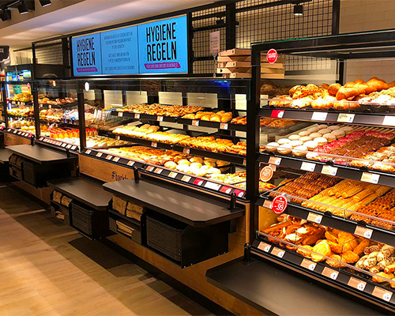

Eating in Berlin, difficult or not ?
Don't panic, I see you coming. No, in Berlin, you don't just eat charcuterie.
Being a rather picky person when it comes to food and not always very up for
new discoveries if I'm not sure I'm going to enjoy, I wondered a lot about what I was going to
good to be able to eat.
If you are classic and not very adventurous like me, the big world-famous fast-food chains are
available in Berlin. The menus may be slightly different, but you will always find your usual good old burger.
If I can recommend a German chain I would recommend Back Factory. It's a bit like our French Paul but more
qualitative and more original.


If you want to try vegan, Berlin is the city for you. In every place where you would like to eat,
you will find at least one or two vegan menus. According to the feedback of some of my friends, all the meals tested were
delicious.
If you don't know where to eat and feel like shopping, the East Side mall
Mall has a floor where there are plenty of restaurants. The concept is very nice, you choose your restaurant,
you order and you get your dish on a tray. Then you choose a table in the space common to all
restaurants. Super practical when in a group, you can't decide on a restaurant that suits everyone.
Alexanderplatz is located in the Mitte district, it is the most famous square in Berlin. You will find there
many restaurants and large brands to eat. Going there, think of watching the TV Tower, it's
Huge, you can't miss it. If you look carefully, you can also find trampolines hidden in the ground.
I hope I have reassured you or at least given you good advice.
Bon appétit !!
Bon appétit !!